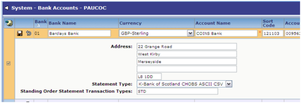

The standing order functionality allows you to set up details of the standing orders for a tenancy.
In addition, if this cash transaction can then be matched to an outstanding lettings? charge/adjustment,
To use the standing order functionality you must first specify the bank statement transaction types that represent ?Standing Orders?, using Bank Accounts:
